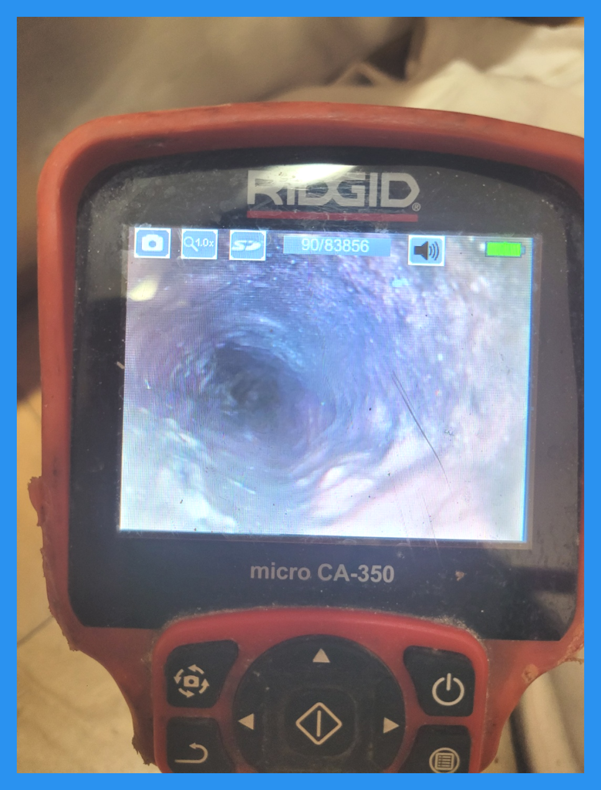
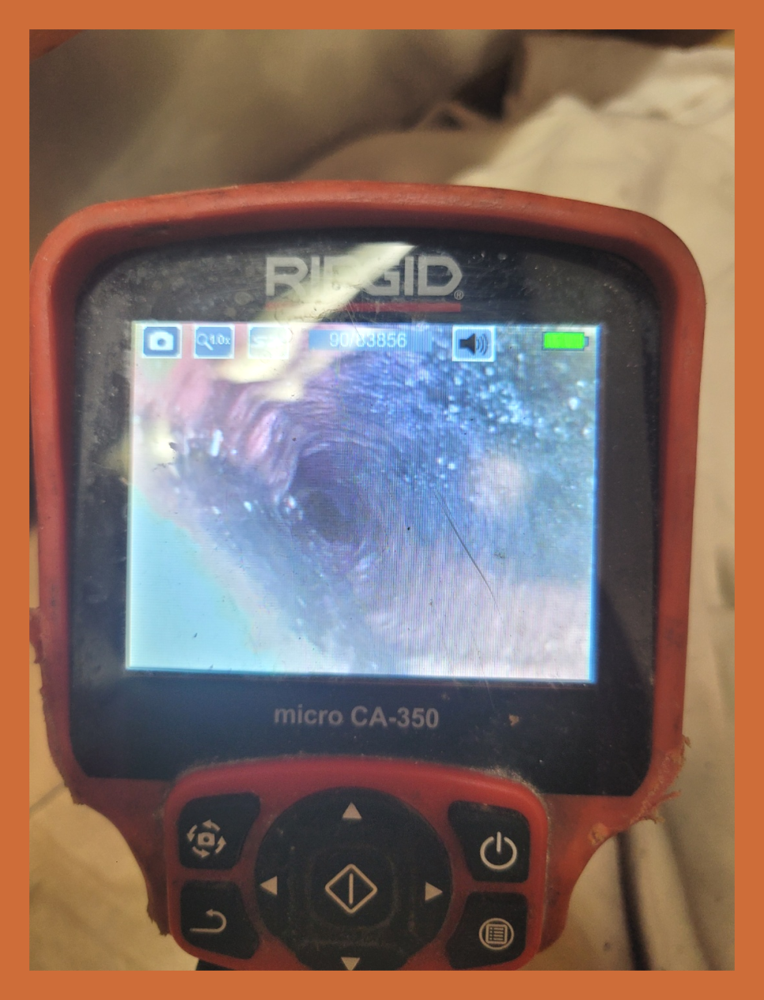
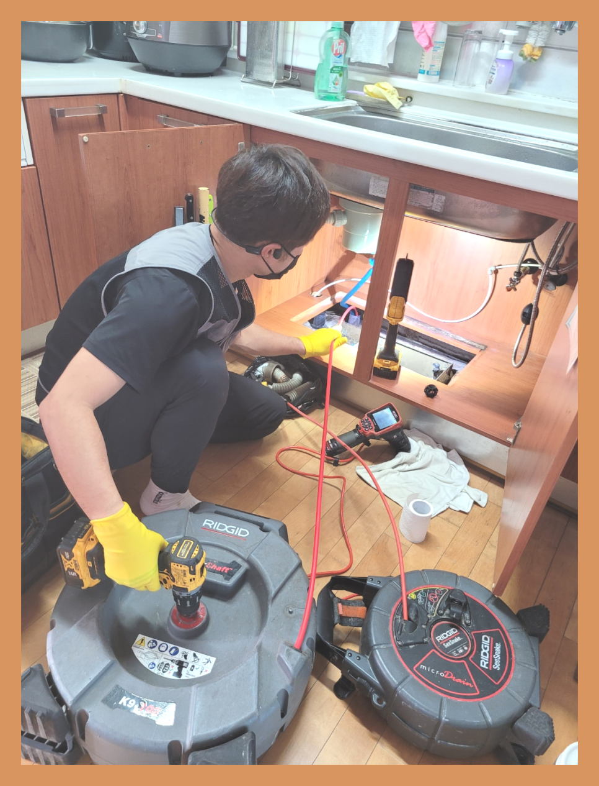
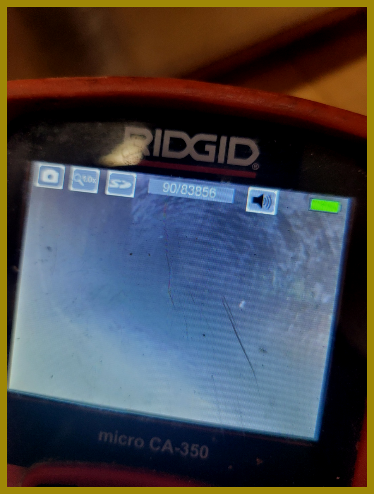

🏠 화성 향남씽크대막힘 뚫음 향남하수구뚫는업체
화성 향남 싱크대막힘 전문 시공 후기

📋 작업 개요
- 위치: 화성 향남, 향남, 화성
- 서비스 유형: 싱크대막힘, 하수구막힘, 배관막힘, 뚫는업체
- 작업 일시: 2023. 8. 30. 22:35
- 업체명: 하수구수사대 (010-5615-2118)
🔍 문제 상황
삶에서 결코 너무 자주 발생하는 "의,식,주(衣食住)" 중에 중요 사항이라 얘기할 수 있는 "식"에 들어가는 집안 내 공간에 대해 이야기하자면 옵션으로 주방이라 단정할 수 있는데요.
부엌은 요리를 하는 공간으로 현재처럼 날씨가 더운 계절에는 자칫해서 잘못하여 관리해주면 심한 냄새와 벌레 꼬임으로 정말 편두통이 생기는 경우가 제법 많이 발생한다고 말씀드릴 수 있습니다.
특별히 향남싱크대막힘이라도 발생한 경우라면 물도 똑바로 사용하지 못해 설거지 같은것도 못하는 경우도 나타나고, 사실상 평소와 같은 생활이 어려울 수 있다고 생각할 수도 있는데요.
엊그제도 하수구막힘을 다녀왔는데, 아파트에서 아주 심각한 막힘 현상을 체험하면서 커다란 스트레스를 받게되고 계시는 의뢰인을 보고 왔는데요.
싱크대막힘은 언제나 갑작스럽게 생기는 경우가 흔한데요.
그 때 현장도 얼추 비슷한 처지에 처했었습니다.
화성 향남씽크대막힘 뚫음 향남하수구뚫는업체
지금바로 나 자신한테 발생한 일이 아니라고 해서 포스팅을 단순하게 넘어갈 부분이 결코 아님을 말씀드리며, 구체적인 사례들을 지금 이 순간부터 말씀 드리도록 하겠습니다.
상가, 아파트, 빌라, 오피스텔 등을 정하지 않고서 싱크대가 놓여있는 곳이라면 언제라도 이같은 막힘 현상을 경험하는데요.
그 때 방문 현장 같은 경우에는 막힘으로 오랫동안 싱크대에 손을 대었었던 날이 없어서, 상당히 웬만한 상황이었지 않나 사전에 예측하여 보게 됩니다.
향남싱크대막힘을 처리함에 있어 기본적으로 있어야 하는 석션 장비는 물론이며, 배관 안쪽까지 관찰할 수 있는 내시경 카메라, 거기 명단에 훌륭한 분쇄력을 보유한 플렉스 샤프트 장비까지 다같이 준비해서 갔는데요.

🔎 원인 분석
💡 전문가 진단: 화성 향남씽크대막힘 뚫음 향남하수구뚫는업체
어째서 막힘현상이 일어나고 있는건지 하나도 잘 모르는 현실에서 재차 찾는 경우가 일어나지 않게 사전에 꼭 있어야 되는 장비를 모두 준비해 방문한거라 짐작하시면 수긍이 되실 겁니다.
현장에 가고 나서 우리들이 첫번째로 시도한 건 바로, 의뢰인과의 대화였는데요.
그간의 생활 습관과 당시 현상과 관련해 어떠한 시도들을 했는지를 먼저 알아보았습니다.
하수구뚫는업체를 콜할때까지 많은 현장에서 스스로 파는 시도 등은 거의 하시는 경우가 흔한데요.
그 때 현장도 뚫어뻥으로 어떻게든 처리해보려 하였으나, 결과적으로 실패해서 연학을 하셨어요.
물론 본인 스스로 처리하여 완벽히 해결이 되는 경우가 수두룩하나, 배관 막힘 부분은 속도전이라고 표현을 할 수가 있을 정도로 시간이 오래걸릴수록 해결이어려워 되도록이면 전문 업체의 손길을 빌려 처리하는 걸 추천합니다.
이후에는 상태를 알아보기 위해 싱크대에 물을 틀어 놓아 어느정도 막힌 상태인지를 봤는데요.
배수구로 물이 도무지 흐르지 않는, 엄청 좋지않은 상태를 나타냈습니다.
만에 하나 막힌 게 그렇게 심하편이 아니라면 얼마만큼의 통수까지는 기다려줘야 했는데, 장시간을 두고서 자세히 보아도 물이 대부분 흐르지 않는 상태였기에 빠른 대응이 필요해 보였죠.
이 부분에 먼저 석션 장비를 써서 흡입해서 처리 가능한지 체크했는데요.
하지만 아쉽게도 사실상 흡입 방식으로 빠져나오는 물질은 전혀 없었고, 예상보다 배관 안을 막고 있는 슬러지나, 이물질의 양과 세기가 굉장함을 알게 되었습니다.
아주 많은 씽크대를 뚫는업체에서 석션 장비를 통하여 미리미리 막힘 처리를 도전했는데요.

🔧 작업 과정
우리 또한 기초에 충실했지만, 생각보다 더 작업의 진도가 안나가서 곧바로 내시경 카메라를 써서 배수구 안쪽을 살펴보고 플렉스 샤프트까지 써서 처리하려고 실시하였습니다.
마지막에 추측했던 대로 많은 양의 기름 찌꺼기와 더불어 이물질이 보였는데요.
낡은 아파트라 오랫동안 누적된 상태로 모아진 기름 찌꺼기 같은 것이 무시무시하게 배수구를 빈틈없이 덮고 있었고,
이 때문에 배관 직경 자체가 대다수가 물이 빠지는 게 힘들만큼 엄청 좁아진 상태로, 왜 이렇게 물이 안내려갔는지 납득할 만한 상황이었습니다.
빨리 플렉스 샤프트를 써서 본격적인 스케일링 일을 시작했는데요.
살짝씩 배관내부가 나아지는 걸 한눈에 볼 수 있었답니다.
플렉스 샤프트는 하수구, 싱크대, 배관 막힘 등을 수습하는 데 있어 뛰어난 기능을 느껴지는 장비의 종류인데,
빠른 시간내에 회전하는 사슬처럼 생긴 모양의 헤드가 배관 안쪽까지 꽉 막고 있는 슬러지와 더불어 이물질들을 효율성있게 없애버려 현장에서 대부분 쓰이고 있는 상황입니다.
단순하게 훌륭한 장비이기에 꼼꼼한 제어가 반드시 필요한데요.
저희 업체에 근무하는 전제적인 근무자들은 이러한 장비들 사용에 있어 뛰어난 실력을 가지고 있어 전혀 문제점없이 취급이 가능합니다.
외에도 처리하기 힘든 작업은 안하고 있으니 비용적인 측면에서도 부담없이 가능한데요.
플렉스 샤프트 스케일링의 작업들은 대응을 용의주도하게 하는 것이 포인트이며, 노후 주택일수록 여타 피해가 발생되지 않게끔 시행하는 게 엄청 제일 중요하므로,
저흰 언제나 이런 걸 인지하고 무사히 작업을 진행하고 있습니다.
그리고 배관 내시경 카메라를 중간중간 써서 배관안을 살펴보면서 일했기 때문에 보다 확실하게 기름 찌꺼기와 더불어 이물질들이 들어있는 부분에 한정하여 작업하는 게 가능했는데요.
사진으로 드러난 것과 같이 작업 전후의 모양이 퍼펙트하게 틀려진 걸 느낄 수 있습니다.
외에도 장리하는 부분에서 싱크대 하부 주름관이 하수 배관과 잇는 면에서 약간의 꺽여있는 게 확인됐는데요.
이런 상황들은 언제라도 물이 고일 가능성이 있고 이것이 오래되면 다른 형태의 막힘으로 이어지는 부분이므로,
고객께 곧바로 얘기하고 문제가 생기지 않게 도와드렸답니다.


✅ 작업 완료
최종적으로 사실상 문제되는 게 잘 처리된 건지 살펴보기 위해 통수 테스트를 시도했는데요.
다행히도 싱크대 배수구로 물이 시원하게 내려가는 모습을 한눈에 볼 수 있었답니다.
고객님도 더불어 점검하시면서 "정말로 문제되는 게 온전하게 해결됐네" 하는 희망으로 다분한 안도의 한숨을 쉬셨어요.
저희 업체는 그날 바로 출동하는 건 물론이며 단번에 문제점들을 해소해드리기 위하여 꼭 있어야 되는 장비를 다같이 준비하고 이동을 하는, 잘 챙기기로 둘째가라고 한다면 서러운 회사라 단정할 수 있는데요.
향남싱크대막힘이 문제가 된다면 염려마시고 곧바로 저희 업체의 자문을 발판으로 빠르고 간단하게 해결해나가시길 바라겠습니다.


⚠️ 주방 싱크대 배관 막힘 예방 수칙
- ✅ 기름기가 묻은 식기나 프라이팬은 설거지 전 키친타올로 반드시 기름때를 닦아내세요.
- ✅ 주기적으로 싱크대 개수대에 뜨거운 물을 가득 받아 한 번에 내려 배관 내부 기름을 씻어내세요.
- ✅ 배수구 거름망을 미세한 필터로 사용하시고 음식물 찌꺼기가 틈으로 새어 들지 않게 관리하세요.
- ✅ 베이킹소다와 식초를 뜨거운 물과 함께 일주일에 한 번씩 부어주면 배관 살균과 막힘 예방에 좋습니다.
💡 핵심 정리
- 확실한 장비 작업(내시경 점검 및 샤프트 스케일링)으로 원인을 뿌리 뽑습니다.
- 작업 후 1년 이내에 동일한 부위 재발 시 100% 무상 A/S 서비스를 보장합니다.
- 서울 · 경기 · 인천 전 지역에 24시간 언제든 긴급 출동할 수 있도록 항시 대기 중입니다.
❓ 자주 묻는 질문 (FAQ)
🚨 화성 향남 싱크대막힘 문제로 고민이신가요?
정확한 원인 진단과 확실한 시공으로 재발 없는 해결을 약속드립니다.
24시간 긴급 출동 | 서울 · 경기 · 인천 전지역 | 1년 내 재발 시 무상 A/S